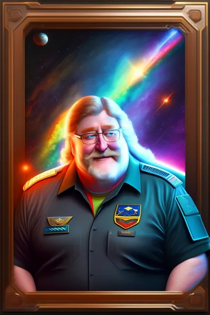

Угадай игру по обзору
ВКонтакте
- Гейб Ньюэлл в космическом гиперболоиде сейчас! 🌌
11 июня 2023 · №2077 в выгрузке стены · оригинал во ВКонтакте ↗


- Гейб Ньюэлл в космическом гиперболоиде сейчас! 🌌
✅ Верный ответ был, как вы понимаете: Stellaris
> Именно там генерал может сбежать с червихой, 100 миллионов могут сожрать ксеноморфы, а самое обидное оскорбление в галактике звучик как - "(*?:!''№;-*/12", плюс ко всему, здесь, конечно же, имеется возможность пересадить себе гены слизня и встретить звездных личисчек. Некоторые из приведенных особенностей единично могут встречаться в остальных предложенных играх, но все в совокупности только в творении Paradox Interactive.
🎼 Правильно ответило целых два человека или 28.57% голосовавших!
> Ожидаем новую летнюю загадку в ближайщее время , дорогие!
📝 #УгадайИгруПоОбзору@criticssteam - #109 | answer
✅ Верный ответ был, как вы понимаете: Stellaris
> Именно там генерал может сбежать с червихой, 100 миллионов могут сожрать ксеноморфы, а самое обидное оскорбление в галактике звучик как - "(*?:!''№;-*/12", плюс ко всему, здесь, конечно же, имеется возможность пересадить себе гены слизня и встретить звездных личисчек. Некоторые из приведенных особенностей единично могут встречаться в остальных предложенных играх, но все в совокупности только в творении Paradox Interactive.
🎼 Правильно ответило целых два человека или 28.57% голосовавших!
> Ожидаем новую летнюю загадку в ближайщее время , дорогие!
📝 #УгадайИгруПоОбзору@criticssteam - #109 | answer